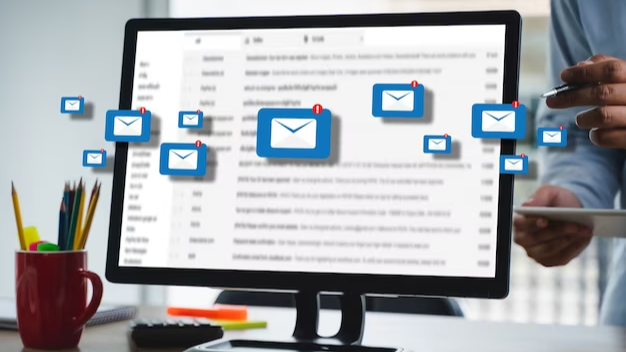
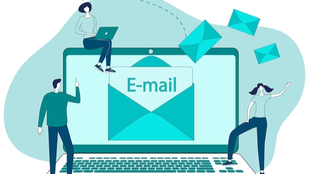

In today's digital world, email has become a primary communication tool for businesses and individuals alike. With this rise in email usage, the potential for cyber attacks and email fraud has increased as well. Hackers often use email spoofing techniques to send fraudulent emails that appear to be from a trusted source, using the domain name of the spoofed email address to gain the recipient's trust. To combat this issue, Domain-based Message Authentication, Reporting and Conformance (DMARC) has emerged as a powerful tool to secure email communications.
DMARC is a protocol that allows email domain owners to publish policies on how incoming emails should be handled, specifically in regards to authentication and identification. A DMARC policy enables organizations to protect their email domains from unauthorized use, ensuring that only legitimate emails are delivered to the recipient's inbox. By implementing a DMARC policy, organizations can ensure that their email communications are secure and that their domain is not being used for fraudulent activities.

DMARC offers a key advantage in its capacity to thwart domain spoofing and email impersonation. Attackers utilize domain spoofing to manipulate the From address in an email, giving the false impression that it came from a trustworthy source.
Sharing sensitive information or downloading malicious attachments as a result of falling for these fraudulent emails can cause financial losses or data breaches.
The inclusion of DMARC provides an extra level of protection as it allows domain owners to designate authorized mail servers for sending emails on their behalf. This process of validation aids in detecting and preventing unauthorized senders, thus minimizing the chances of email spoofing.
In addition, DMARC offers valuable insights into the utilization of your email domain.
It produces reports that provide visibility into the process of
By utilizing these reports, domain owners can oversee their email ecosystem, recognize possible security risks, and respond accordingly to reduce them. With the implementation of DMARC, organizations can actively identify and resolve any dubious actions, guaranteeing the security and reliability of their email channels.

The implementation of DMARC is not a singular task, but rather a continuous process that necessitates vigilance and adjustment. Companies should initiate the process by establishing a DMARC record in their DNS (Domain Name System) to outline their email authentication policies. This record provides guidance to email servers on how to manage emails that do not pass DMARC checks.
At first, organizations have the option to establish a policy of none, enabling them to gather DMARC reports without impacting email delivery. Through analyzing these reports, they can progressively adjust the policy to either quarantine or reject mode, effectively preventing unauthorized emails from reaching recipients' inboxes.
To enhance their overall email protection, organizations should implement
The purpose of SPF is to confirm the authorization of the sending server to send emails for a particular domain, while DKIM guarantees the preservation of email content without any modifications during its journey. The combination of DMARC, SPF, and DKIM forms a strong email authentication framework that greatly minimizes the chances of email-related risks.
Overall, DMARC (Domain-based Message Authentication, Reporting, and Conformance) is an essential tool for verifying email domain security. It allows domain owners to take control of their email domain and prevent email spoofing, phishing, and other fraudulent activities that can harm their business reputation and customers. Implementing DMARC requires technical knowledge and expertise, but it is a necessary step that can help organizations protect their brand, customers, and sensitive information from cybercriminals. By ensuring that your email domain is DMARC compliant, you can build trust with your customers and partners, avoid email deliverability issues, and reduce the risk of financial and legal liabilities.